Vector Product
點積與叉積
電腦實施運算，通常會有浮點數誤差。為了避免浮點數誤差，當使用電腦計算幾何問題，會採用不同於一般的數學公式和定理。
點積（dot product）、叉積（cross product）這兩個運算只有加減法和乘法，而不包括除法，能夠有效避免除法產生的浮點數誤差，另一方面也能夠減少計算時間。點積與叉積有著許多好用的特性，大部分的幾何問題，都可以運用點積與叉積來計算答案。
以下都是用二維空間當作範例。
資料結構
點積與叉積是向量運算，所以先設計一個向量的資料結構。
向量資料結構擁有一個座標，並且擁有一支點積函式與一支叉積函式。
兩個向量做點積的結果是一個純量。兩個向量做叉積的結果為一個向量，然而我們通常只會用到純量部份，所以讓叉積函式的回傳值為純量。
點積、叉積跟長度的關係
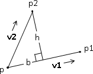點積的結果為垂直投影的某種量。這某種量取絕對值，再除以底向量長度，得到底。
叉積的結果為平行四邊形的面積量。面積量取絕對值，再除以底向量長度，得到高。
點積、叉積跟角度的關係
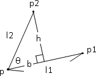注意到acos與asin的回傳值，回傳的結果是弳度量（radian）而非度度量（grade），而且回傳值的範圍也不同。一般都以點積與acos求得介於0˚到180˚之間的夾角大小。
點積與向量夾角
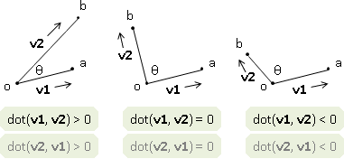利用點積的性質，可以粗略判斷夾角大小：點積大於0時，兩向量夾角小於90˚；等於0時，夾角等於90˚；小於零時，夾角大於90˚且小於180˚。
叉積與向量旋轉
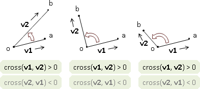利用叉積的性質，可以粗略判斷夾角方向：叉積大於0時，兩向量前後順序為逆時針順序（在180˚之內）；等於0時，兩向量平行，也就是指夾角等於0˚或180˚；小於0時，兩向量前後順序為順時針順序（在180˚之內）。
UVa 10445
Distance
Distance
以下簡單介紹二維座標平面上計算距離的方式。
UVa 152 10514 10709
點到原點距離
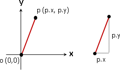開根號相當耗費時間。有時候做一些幾何計算時，會將數學式子簡化到不必開根號，以節省計算時間。因此，設計不開根號的程式碼，有時候也是會有用途的。
點到點距離
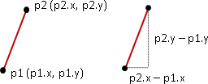點到線距離
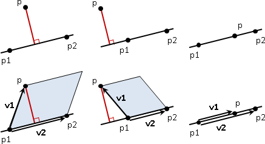數學常常用ax+by+c=0表示直線，運用abs(ax+by+c)/sqrt(a^2+b^2)公式計算點到線距離。計算學則是直接以相異兩點表示直線，運用叉積計算點到線距離。
叉積求出v1v2組成的平行四邊形面積，然後除以v2的長度，便是垂直距離。叉積可能會有負值，請記得取絕對值，才不會得到負的距離。
點到線段距離
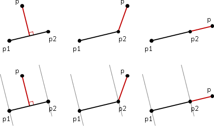點到線段的最短距離，有時候是點到線上的垂直距離，有時候卻是點到線段端點的距離。
點到線段的距離，和三點共線、點在線上這些因素無關，所以這裡將空間劃分為垂直距離區和端點距離區兩塊，用點積進行判斷。這只是一種劃分方式，各位也可以自行發明適合的劃分方式。
線段到線段距離
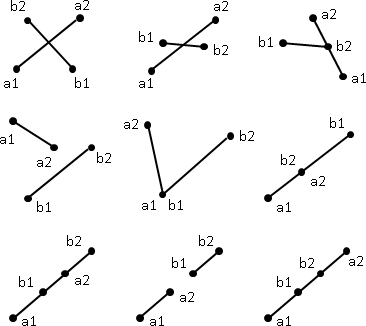兩線段相交，距離為零；兩線段不相交，窮舉所有的端點到線段距離，取最短者。兩線段相交請參考後面章節，點到線段距離請參考前面章節。
各位可依照上圖所列舉的各種情況，驗證此方法是有效的。
線到線距離
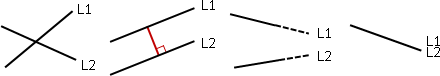兩線相交，距離為零；兩線平行，距離為l1上任取一點到l2的距離。用叉積判斷平行。
Intersection
Intersection
人類比電腦擅長判斷相交。人類可以追著線條移動，快速找到交點；人類也有很強的空間感，能夠迅速劃分地理位置，看一眼就能區隔出成堆的線段。但是電腦卻做不到這些，電腦只會算數字、分條件。
判斷相交原本是極容易的事情，主角改為電腦之後，卻變成極複雜的事情了。下面介紹二維座標平面上判斷相交的方式、計算交點的方式。
UVa 191 273 378 527 754 866 10902
點與線段相交
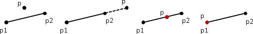利用點到點距離。開根號，有誤差。
比較妥當的方式，是先用叉積判斷點與線段是否共線，再用點積判斷點是否位於線段端點之間。
兩共線線段相交
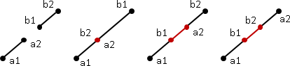線段端點位於另一條線段上面，則相交。
兩線段相交，之一
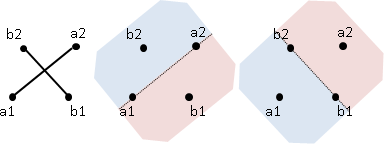兩線段相交，也就是一條線段被另一條線段分為兩邊。兩線段端點位於另一條線段的兩側，則相交；小心處理端點共線的情況。
兩線段相交，之二
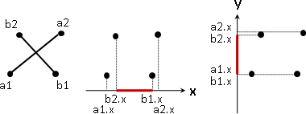先判斷兩線段在X座標軸、Y座標軸上面的投影是否相交（數線上的線段相交），然後再用叉積判斷線段端點位於另一條線段的兩側。不必煩惱端點共線的情況。
兩線段相交，之三
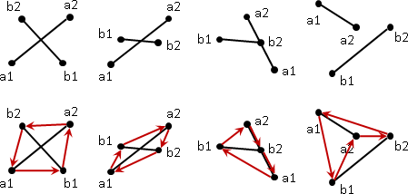接著介紹不切實際的方法，但是其觀念值得一提。
線段相交，可以想像成是兩條交錯的四邊形對角線。換句話說，就是將線段的端點安排成四邊形的頂點，讓四邊形的對角線成為原來的兩條線段。如此一來，只要用一個四邊形，便可代表這兩條線段。
凸四邊形的對角線，都會相交；凹四邊形、交叉四邊形的對角線，不會相交──於是判斷線段相交，可以轉化做判斷凸四邊形。要判斷凸多邊形，只要順著多邊形的外圍繞一圈，看看是否一直往同側轉彎即可。判斷轉彎得利用叉積：順時針轉彎叉積得正值，逆時針得負值。叉積等於零則表示線段端點產生三點以上共線。
兩線交點
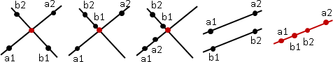http://paulbourke.net/geometry/pointlineplane/
數學公式解，聯立方程式。
兩共線線段交點
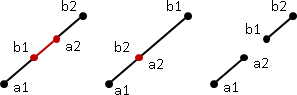兩線段重疊，交點無限多；兩線段端點相接觸，交點恰為一點；兩線段不相交，交點不存在。
如果兩共線線段恰有一個交點，那麼交點就一定是線段端點。
兩線段交點
兩線交點，之二
介紹另一個方法，本質等同於數學公式解。請見下圖：
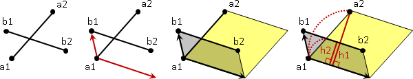以a1為基準點，以b1b2為平行四邊形的底，利用兩個平行四邊形的高的比例，便能求出a1到a2與a1到交點的距離比例。
平行四邊形的面積可用叉積運算求出，所以這個方法相當方便。實作程式碼時，要注意叉積的順序，叉積的順序將導致正負號的差異。
兩線段交點，之二
接續上一段內容。小心判斷兩個平行四邊形的高的比例是不是0到1，當線段b1b2位於a1到a2的範圍，兩者相交。至於範圍是指a1和a2兩點，以平行b1b2的方向畫出的直線作為範圍，如下圖所示：
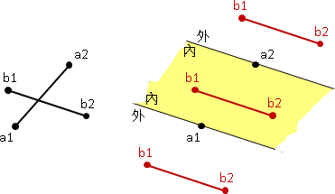另外，除了以a1a2為範圍，還要再以b1b2為範圍再算一遍，才能確定兩線段到底有沒有相交。
由於s與t只差一負號，故可以用s代替t。另外c1與c3也只差一負號，故可以用c1代替c3。程式碼可再精簡。
Transformation
Transformation
以下介紹二維座標平面上的常見動作。
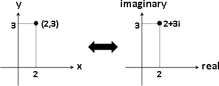運用C++的複數函式庫，以複數表示二維座標，就能少寫很多程式碼。
UVa 10263 12303
Translate
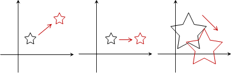「位移」是直直移動，大小不變。
運用Incremental Method的精神，圖形的位移，分解成線段的位移，分解成點的位移。
點的位移有兩種想法，第一種是座標相加的概念，位移量便是座標差；第二種是向量相加的概念，位移量便是向量差。
雖然第二種想法不太直覺，但是由於向量很強大，還是習慣一下向量吧！
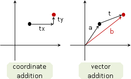Rotate
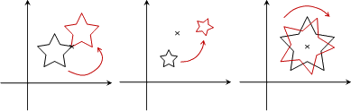「旋轉」，先取一個旋轉中心點，旋轉整張圖。
點的旋轉，先把旋轉中心點位移至原點，就容易處理了。
複數相乘等於長度相乘、角度相加。製造一個複數，長度等於一，角度等於旋轉角度，就可以運用複數乘法，完成點的旋轉。
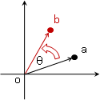Scale
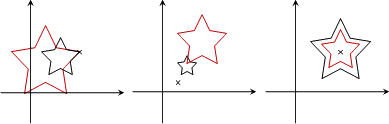「縮放」，先取一個縮放中心點，縮放整張圖。
點的縮放，先把縮放中心點位移至原點，就容易處理了。
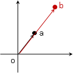Project
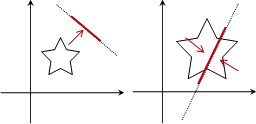「投影」，先取一條投影線，整張圖垂直投射至線上。
project這個英文單字有「投影」和「計畫」兩種意義，此處講的是「投影」。
點的投影有兩種想法，第一種想法是直線交點的概念，首先求出投影線與其法線，再解聯立方程式；第二種想法是向量點積的概念，首先把投影線位移至原點，就容易處理了。
雖然第二種想法不太直覺，但是由於向量很強大，老話一句，還是習慣一下向量吧！
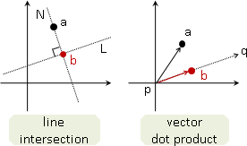Reflect
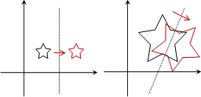「鏡射」，先取一條對稱線，整張圖沿線翻轉，正面變反面。
reflect這個英文單字有「鏡射」和「反射」兩種意義，此處講的是「鏡射」。
有兩種實作方式，後者的程式碼比較簡潔。
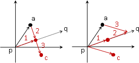